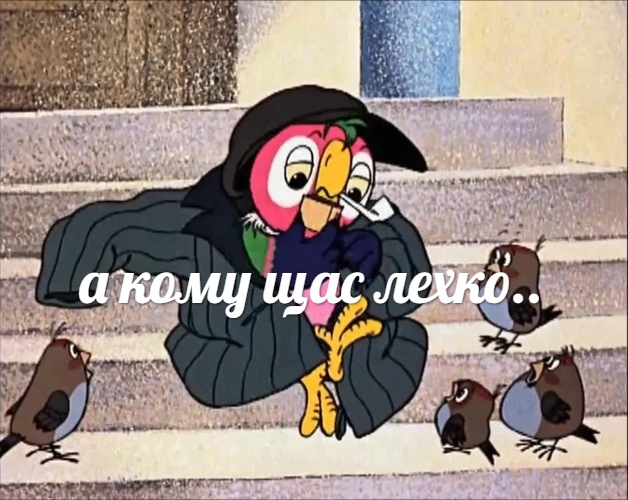

Коротко о мемах
Мем (англ. meme) — единица культурной информации. Мемом может считаться любая идея, символ, манера или образ действия, осознанно или неосознанно передаваемые от человека к человеку посредством речи, письма, видео, ритуалов, жестов и т. д. Концепция мема и сам термин были предложены эволюционным биологом Ричардом Докинзом в 1976 году в книге «Эгоистичный ген». Докинз предложил идею о том, что вся культурная информация состоит из базовых единиц — мемов, точно так же как биологическая информация состоит из генов; и так же как гены, мемы подвержены естественному отбору, мутации и искусственной селекции.

Докинз, безусловно, был тем ещё чудиком, но всё же его гениальную теорию было решено не убирать из материалов сайта. Почему? Да потому что я могу. Если коротко и просто для простого русского человека, которому чужда вся вот эта наука и тому подобное, то мемасик - какая-либо шутка или просто действие, распространяющийся в массах со скоростью чумы в средневековой Европе. Это, к слову, не единственное сходство чумы и мемов, но об этом позже - в других статьях.
Дальше
Главная